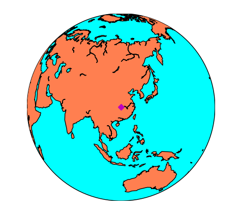
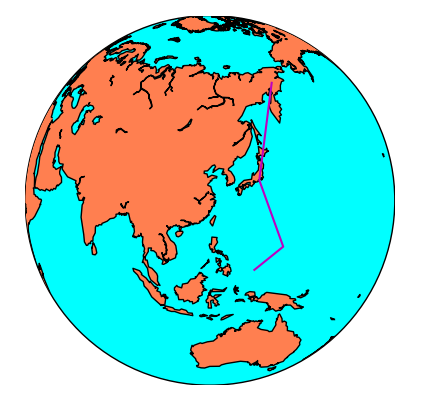
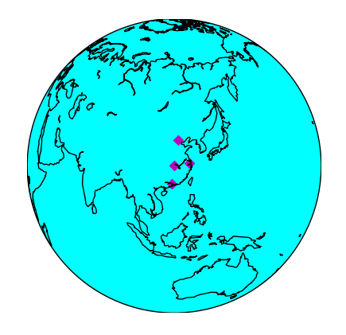
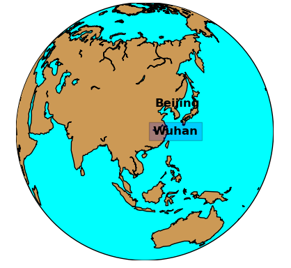

【译】Basemap手册——第二章（三） 进阶
这几个函数在第一章中都使用过，这里再稍微详细说一下
plot
在地图上绘制标记和线条，该函数有如下参数：
plot(x, y, *args, **kwargs)
-
x 和y可以是浮点型数据投影单位表示的位置（画标记），也可以是点的列表（画线段）
-
如果关键字latlon设置为True，x和y会被转换成经纬度，但是在老版本中不起作用。
-
默认的标记是点
-
默认的颜色是黑色
下面的例子绘制一个点：
import matplotlib.pyplot as plt
map = Basemap(projection='ortho',
lat_0=30, lon_0=112)
map.drawmapboundary(fill_color='aqua')
map.fillcontinents(color='coral',lake_color='aqua')
map.drawcoastlines()
x, y = map(112, 30) # x是经度，y是纬度
map.plot(x, y, marker='D',color='m')
plt.show()
效果如下：
 如果参数是数组列表，markers=None，那么绘制的是线段：
from mpl_toolkits.basemap import Basemap
import matplotlib.pyplot as plt
map = Basemap(projection='ortho',
lat_0=30, lon_0=120)
map.drawmapboundary(fill_color='aqua')
map.fillcontinents(color='coral',lake_color='aqua')
map.drawcoastlines()
lons = [169.6, 139, 144,134]
lats = [64, 35, 13, 7]
x, y = map(lons, lats)
map.plot(x, y, marker=None,color='m')
plt.show()

scatter
在地图上绘制多个点
scatter(x, y, *args, **kwargs)
-
x和y分别是要绘制在地图上的点的坐标
-
如果关键字latlon设置为True，x和y会被转换成经纬度，但是在老版本中不起作用。
-
默认的标记是点
-
默认的颜色是黑色
下面的例子绘制多个离散的点：
from mpl_toolkits.basemap import Basemap
import matplotlib.pyplot as plt
map = Basemap(projection='ortho',
lat_0=30, lon_0=114)
map.drawmapboundary(fill_color='aqua')
# map.fillcontinents(color='coral',lake_color='aqua')
map.drawcoastlines()
lons = [116, 121, 113, 114] # 北上广武
lats = [40, 31, 23, 30]
x, y = map(lons, lats)
map.scatter(x, y, marker='D',color='m')
plt.show()
效果如下：

text
在地图上写字
text(x,y,s,fontdict=None,withdas=False,**kwargs)
- text方法不属于Basemap，而是属于matplotlib，所以只能在plot或者axis实例中使用
- x和y是地图投影下的坐标，一次只能接收一个点的坐标，所以要放置多个文本，就要多次调用text方法
- s是字符串
- withdash设置为True的时候表示带破折号
- fontdict用来表示文字属性的集合 还可以有下面这些属性：
- fontsize 字体大小
- fontweight 字体粗细
- ha 水平位置 设置center/left/right
- va 垂直位置 设置center/top/bottom
- color 颜色
- bbox 文本设置边框：bbox=dict(facecolor='red’,alpha=0.5) 示例如下：
from mpl_toolkits.basemap import Basemap
import matplotlib.pyplot as plt
map = Basemap(projection='ortho',
lat_0=30, lon_0=110)
map.drawmapboundary(fill_color='aqua')
map.fillcontinents(color='#cc9955',lake_color='aqua')
map.drawcoastlines()
lon = 116
lat = 40
x, y = map(lon, lat)
plt.text(x, y, 'Beijing',fontsize=12,fontweight='bold',
ha='left',va='bottom',color='k')
lon = 114
lat = 30
x, y = map(lon, lat)
plt.text(x, y, 'Wuhan',fontsize=12,fontweight='bold',
ha='left',va='center',color='k',
bbox=dict(facecolor='b', alpha=0.2))
plt.show()
效果如下：
